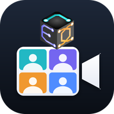

받은 초대문을 복사한 뒤 아래 버튼을 누르거나 회의 ID 칸에 붙여 넣으면 회의 정보가 자동으로 채워집니다.
📲 앱처럼 쓰려면 Safari의 공유 버튼(□↑)을 누르고 “홈 화면에 추가”를 고르세요.
영상·음성·파일은 참가자끼리 직접 주고받고 서버에 저장되지 않습니다. 녹화·녹취록·캡처는 각자 PC에만 남습니다.
배경 흐림은 방을 흐리게 보여 줄 뿐 가려 주지 않습니다. 방을 숨기려면 '배경 바꾸기'를 쓰세요.
사람과 배경을 이 PC 안에서 구분합니다(영상이 외부로 나가지 않음). 처음 한 번은 준비에 몇 초 걸립니다.
외부 접속을 켜면 인터넷 어디서나 초대 링크(또는 회의 ID·비밀번호)로 참여할 수 있습니다. 이 PC에서만 회의를 열 수 있고, 외부 사람은 참여만 가능합니다.
호스트입니다. 어떻게 할까요?